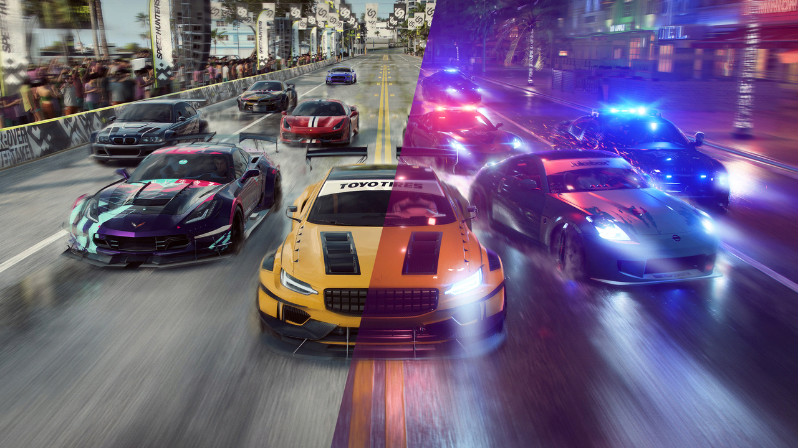

Novas Customizações
Need for Speed Heat acaba trazendo justamente um bom sistema de customização de volta ao jogo, que não diz respeito a fazer apenas mudanças no motor, pneu e outros itens. Aqui, apesar de o sistema não ser tão profundo quanto no passado, o jogador consegue criar um visual único para o seu carro.
Inclusive, uma adição bem-vinda ao jogo é a possibilidade de ver os visuais criados pela comunidade. Então, se você não está com a criatividade muito em alta ou quer apenas o visual de um carro, que você viu nos Velozes e Furiosos, é só entrar lá e baixar ele ou ficar rodando pelas inúmeras opções disponíveis.

Novo modo corridas de dia e de noite
Mais um dos pontos cruciais de Need for Speed Heat e que determina bem o ritmo de jogo é justa essa mecânica de dia e noite. Diferente de outros jogos, em Palm City, o tempo não passa só por correr no jogo, e é você quem decide se correrá de noite ou de dia.
A princípio, isso pode até parecer confuso, mas faz todo sentido ter que escolher a hora em que você vai correr devido a mecânica do jogo. Ao correr durante o dia, ou seja, nos eventos oficiais e legalizados, você obtém apenas dinheiro, que é claro, é utilizado para comprar os carros e fazer a tunagem deles.
Já as corridas de noite não vão lhe render dinheiro, mas só te darão reputação. Apesar de isso soar estranho e o nome dar a impressão de que isso não tem valor, é justamente ao atingir níveis novos de reputação, que você desbloqueia carros e peças novas para eles.